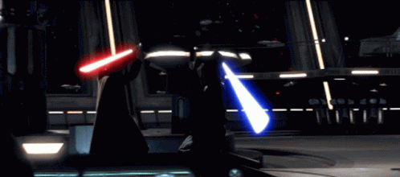

Os episódios que compõem esta saga são:
Além deste eixo principal, há uma produção independente, Star Wars: The Clone Wars, que descreve o que aconteceu entre os filmes II e III.
George Lucas, com essa criação genial, tem hoje um lucro de pelo menos 1 bilhão de dólares só com a comercialização de produtos como os Legos temáticos, que enfocam episódios de Star Wars.
E toda essa febre só tende a crescer, com o advento da produção de novas mercadorias, na esteira da adaptação desta série para a televisão.
